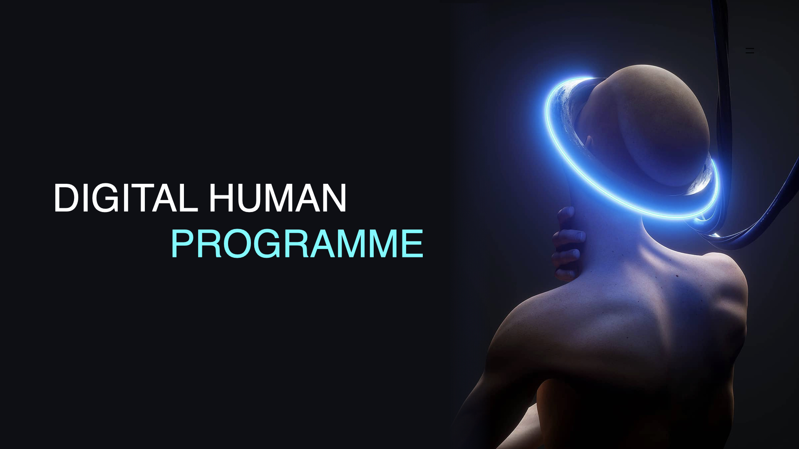

Introduction
In recent years, in the Internet environment, personal data has become the new "gold" for industrial innovation and market competition, as well as the "shortcut" for fraudulent activities, information leakage and data monopoly. Everyone's so-called privacy is transformed into highly visible network data that is recorded in the background and fully connected to each other's increasingly interactive Internet, which has objectively broken the boundaries of privacy.

However, few people realise that when so much of your personal data is collected, your every move is accurately predicted. In other words, you are no longer an individual, but are recognised by machines as an aggregate of data consisting of many tags. So I wanted to make a project to show the audience how easy it is to steal your information if you don't pay attention to the security of your own personal data. This is a thought-provoking project.
The Digital human programme consists of two parts: a physical device controlled by Arduino and an interactive screen controlled by Arduino and P5.js. For the physical device part, I have selected 4 representative brain sites through some medical papers to process the different data stored in our body. Pressure sensors and RGB lights are installed on these points. When the user touches one of the sensors, the RGB light starts to flash in different colours to indicate that the data is being collected, and at the same time, some of the particles moving in the screen start to change their trajectory; when the data collection is complete, the light turns red, and at the same time, the particles in the screen have finished their movement - - and become the hidden and visible part of the screen. When data collection is complete, the light turns red and the particles in the screen have completed their movement - becoming part of a shadowy figure in the screen; when all 4 parts of the data are collected, the screen completes the complete figure, which means that the user has become a "data person”.
Concept and Background Research
From the perspective of the function and value of data, data is a measurement and record of the objective world, and data is a description, record and expression of human society. As Viktor Mayr Schönberg, the "father of big data", said, everything in the world is seen as being composed of data, and everything is "quantifiable" and can be represented by coded data. Data is the fundamental lens and element through which humans analyse and deconstruct the world.

Currently, many artworks focus on the serious consequences of privacy breaches. The digital human programme, on the other hand, focuses on the simplicity of the process of personal data leakage: far from requiring complex and sophisticated design as in films, the leakage may simply be the result of a user inadvertently agreeing to an additional authorisation when using a device. In this project, the viewer only needs to lightly touch the physical device, and a portion of the viewer's personal data will be displayed on the screen. Touching different parts of the physical device represents different types of data. The aim is to make more people more aware of protecting their personal data.
Reflection and Future Development
On the other hand, I personally believe that this is because people don't understand how valuable data is, which leads to the lack of attention to personal data protection. So, in the future, I want to build a platform to help people realise their data more easily. People can trade data freely on this website, and large companies can also buy legitimate personal data in bulk on this platform.